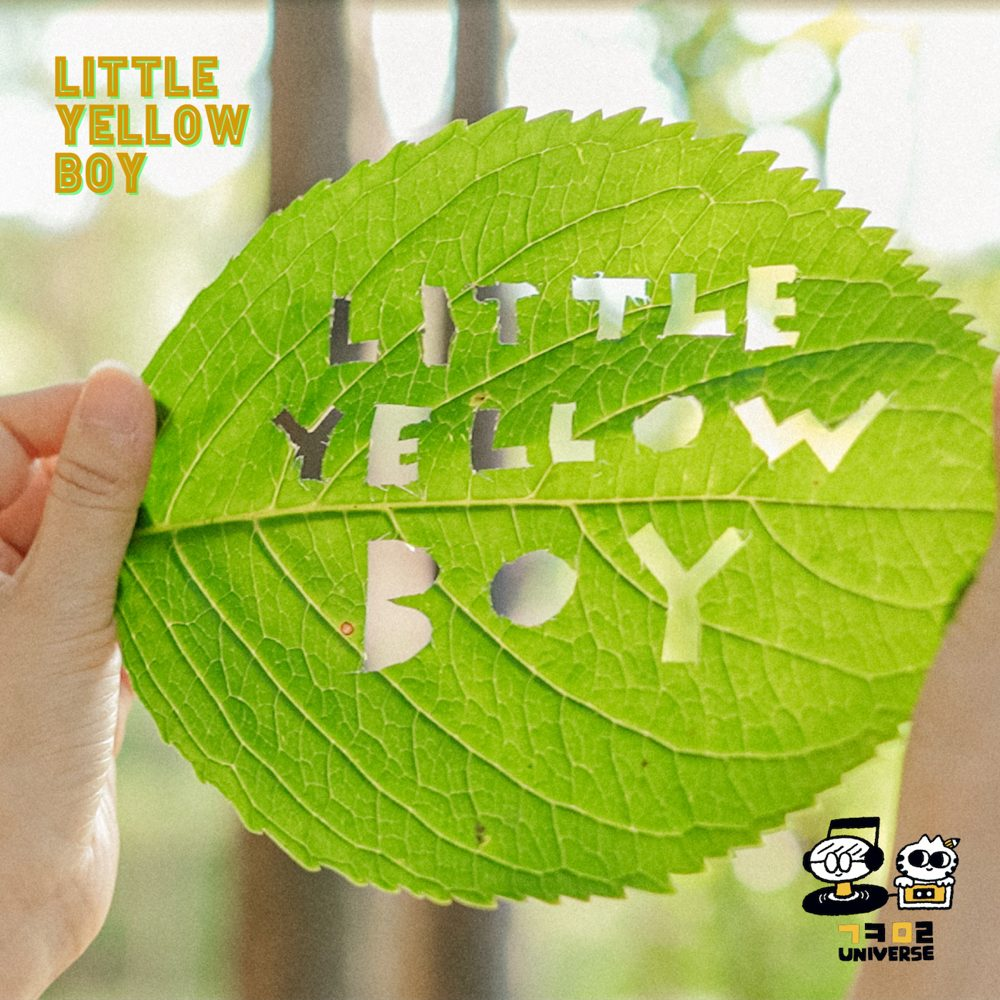

과카몰리 유니버스No. 001

Little Yellow Boy
GuacaMolly Universe · Digital Single · 2021.09.28
곡 쓰고 노래하는 과카(Guaca)와 글 쓰고 그림 그리는 몰리(Molly)가 들려주는 첫 번째 이야기. 나뭇잎을 지나느라 초록빛을 머금은 햇살을 느끼며, 기분 좋은 바람이 불어오는 나무 아래 누웠다. 눈을 들어 하늘을 보다 보니, 나무 둥치를 올라가는 노란 애벌레를 발견했다. 애벌레야, 너는 무슨 생각하고 있어? 노크온 레코드의 첫 번째 작품입니다.
- 01Little Yellow Boy과카몰리 유니버스
WatchOfficial MVVideosArtist과카몰리 유니버스
Credits
Composed & Arranged by 마이마르스(MyMars)
Lyrics Written by 야옹이버스(YaongBus)
All Music Performed & Produced by 마이마르스(MyMars)
Chorus & Vocal Directed by 제이드(Jade)
Vocal Recorded by 최연수 @서경대 레코딩 스튜디오
Mixed & Mastered by 강호정
Music Video 마이마르스(MyMars), 야옹이버스(YaongBus)
Cover Artwork 야옹이버스(YaongBus) · Character Design 동그란씨(DongranC)